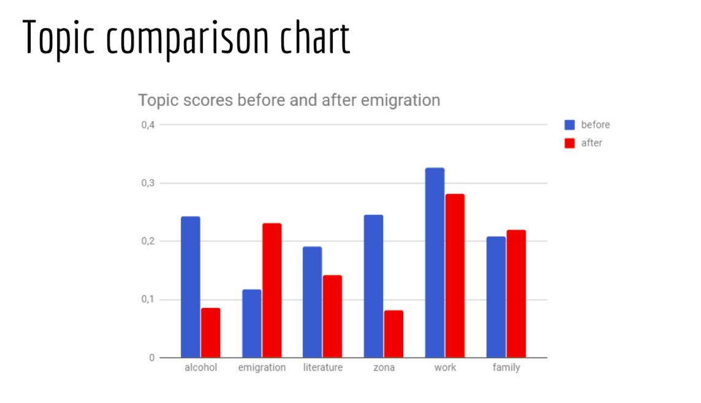

Введение в Digital Humanities
Как посчитать литературное произведение и не получить по шапке от филологов
Даша Максимова,
Фундаментальная и компьютерная лингвистика, ВШЭ–Москва
Пишите письма: daria.maximova.m@gmail.com (ну, или VK!)
Эти слайды: https://creaciond.github.io/slides/introdh/sloncamp
Что это вообще такое эти Digital Humanities?
Для начала попробуем перевести:
цифровые гуманитарные науки
цифровая гуманитаристика
Как вам больше нравится? В чём, по-вашему, разница? Как правильно?
На самом деле, разницы нет :)
И мы всё равно говорим по-английски!
Digital
Что мы можем назвать digital?
Всё то, для чего мы используем вычислительные мощности:
- программирование
- статистические методы
- машинное обучение
- автоматический анализ текстов
- semantic web, linked open data
- wiki-технологии
Humanities
Гуманитарии???
Всё, что мы можем называть гуманитарным наследием:
- литература
- дневники, любые письменные данные
- картины
Но это ещё не всё!
- географические данные (GIS-системы)
- wiki-данные
- фильмы
Wiki говорит:
это область исследований, обучения и созидания, созданная на стыке компьютерных и гуманитарных наук. Цифровые гуманитарные науки предполагают использование оцифрованных материалов и материалов цифрового происхождения и объединяют методологии из традиционных гуманитарных наук (история, философия, лингвистика, литература, искусство, археология, музыка и т.д.) с компьютерными науками, предоставляя компьютерные инструменты и открывая новые возможности для сбора и визуализации данных, информационного поиска, интеллектуального анализа данных, а также применения матстатистики.
Так в чём прикол?
DH, в отличие от классической филологии, занимается дальним чтением.
| Ближнее чтение | Дальнее чтение |
|---|---|
| close reading | distant reading |
| читаем один текст и очень внимательно | "читаем" по сотне текстов за раз |
| конкретные черты стиля конкретного автора | абстрактные закономерности, характеризующие сразу многие тексты |
Franco Moretti. Distant Reading. New York: Verso Books, 2013
русский перевод: Франко Моретти. Дальнее чтение. М.:Издательство Института Гайдара, 2016
Тексты
Что можно делать с текстами?
- стилометрия: насколько тексты похожи по стилю?
- тематическое моделирование: о чём в основном (и какими словами) написано?
- сетевой анализ: как связаны между собой персонажи в произведении?
- наблюдение трендов
Стилометрия
Служебные, малозначащие, не бросающиеся в глаза слова + статистические критерии = "стиль" автора. Так вычислили Джоан Роулинг, когда она написала "Зов кукушки" под псевдонимом.
How a Computer Program Helped Show J.K. Rowling write A Cuckoo’s Calling. Patrick Juola for Scientific American, 2013
Тематическое моделирование
Русские авторы-эмигранты после отъезда меньше пишут об алкоголе, но больше — о быте за границей.
Emigre Writers: Topic Modeling Before and After.
Г.Рязанская, М.Суворова, А.Щевьёва,
коллоквиум на миноре Digital Humanities в Вышке, 29.03.2018
Сети

На иллюстрации — сеть персонажей из исторической драмы А.С. Пушкина Борис Годунов. Гораздо проще понять, что Гаврила Пушкин — связующий персонаж, если посмотреть на граф, а не читать пьесу.
Introducing RusDraCor, a TEI-Encoded Russian Drama Corpus for the Digital Literary Studies.
Fischer et al., Corpora 2017, St. Petersburg
Другие проекты
1917. Свободная история

Толстой Digital

http://tolstoy.ru/projects/tolstoy-digital/, игра Толстой или компьютер на сайте Arzamas.
Подводим итоги
- DH — это когда мы применяем компьютерные штуки к некомпьютерному наследию
- Основной принцип — "дальнее чтение"
- Область новая, так что можно стать первооткрывателем (не забудьте только про интерпретируемость ваших результатов!)
Мне понравилось, где можно почитать ещё?
DH-Центр Вышки (подпишитесь на рассылку!)Канал в телеграме*
*Мессенджер, запрещённый на территории РФ